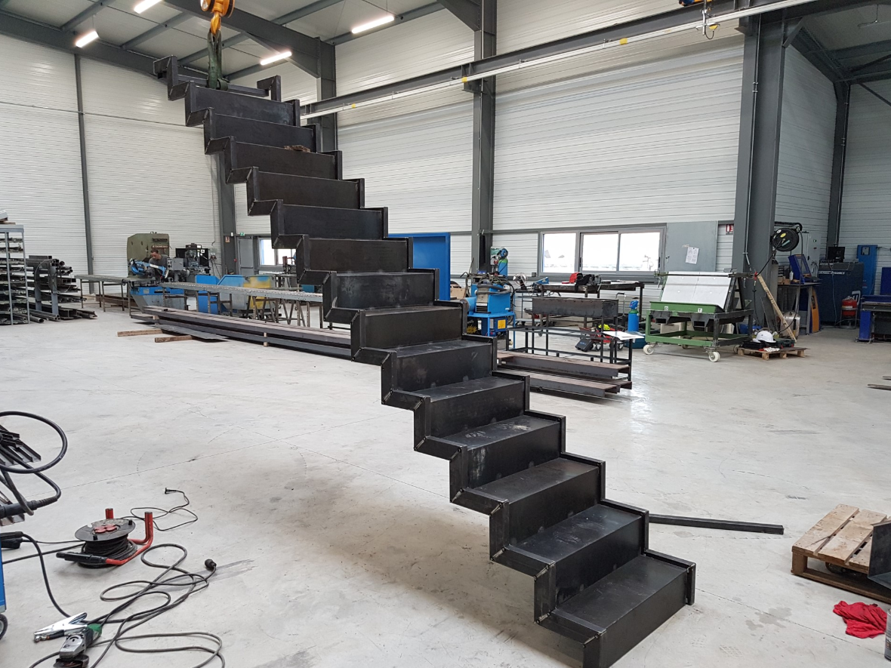

Mon CV
Chabaud Maxime
3 avenue st-Exupery Bat A st-Exupery 2
13250 St-Chamas
téléphone : 06.40.31.51.59
mail : maxime.chabaud10@gmail.com
Expérience Professionnelles
- Deshons hydraulique: stage (1 Sept 2014 - 10 Oct 2014)
- Pliage,meulage,perçage,fraisage, soudure TIG.
- Ferronnerie lambescaine: Stage (2 Fev 2015 - 6 Mars 2015)
- Fabrication de garde corps,grille,portail,rampe d'escalier,escalier plus pose sur chantier, tronçonnage,pliage,peinture,soudure semi-automatique.
- Trametal : CDD (30 Mai 2016 - 30 Juin 2016)
- Fabrication de garde corps,tronçonnage,soudure TIG.
- Ferronnerie lambescaine : CDD (1 Sept 2016 - 30 Nov 2016)
- Fabrication de porte enseigne,garde corps,étendoir,escalier,portail,perçage,peinture,soudure semi-automatique
- Mairie de st-Chamas : (1 Sept 2017 - 30 Sept 2018)
- peinture au sol,peinture batiment,soudure électrode,enrobé,débroussaillage,élage,entretien de massif de fleur,préparation arrossage automatique,préparation matériel pour fête.
Diplômes
- 2014: Obtention du certificat de sauveteur secouriste du travail
- 2014-1016:CAP réalisation en chaudronnerie industrielle.
Information Complémentaire
- Langues: Anglais niveau CAP,espagnol niveau collége.
- Lecture de plan,Word,Excel.
